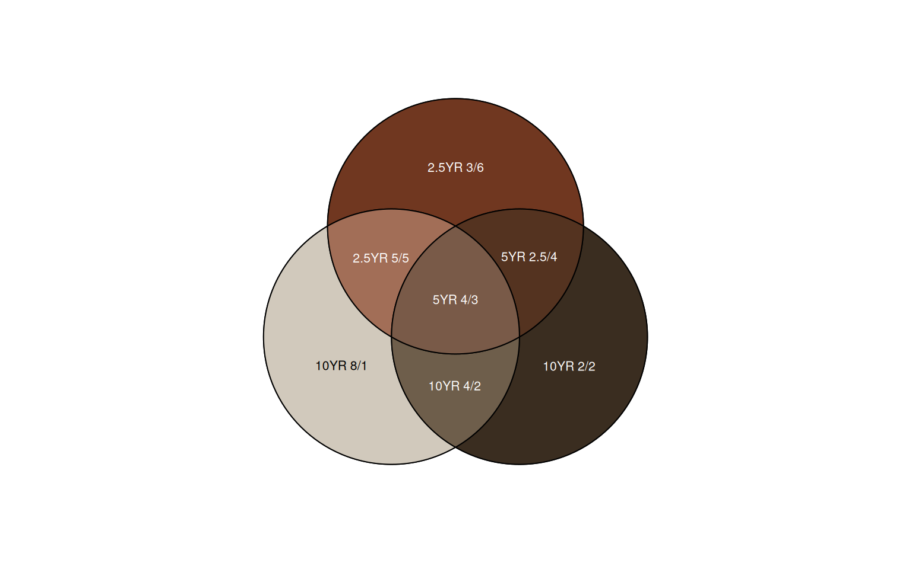
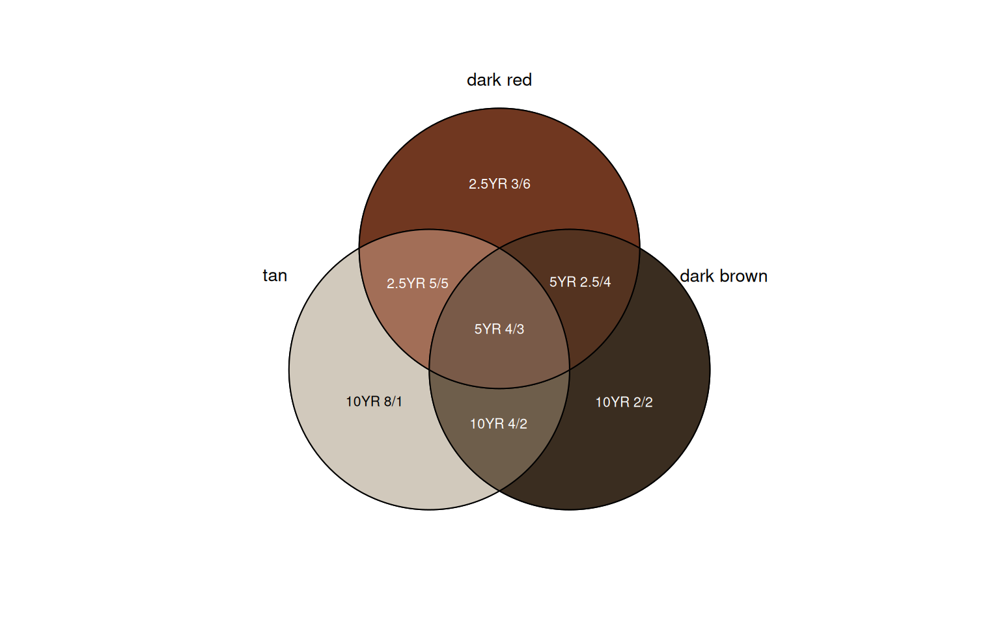
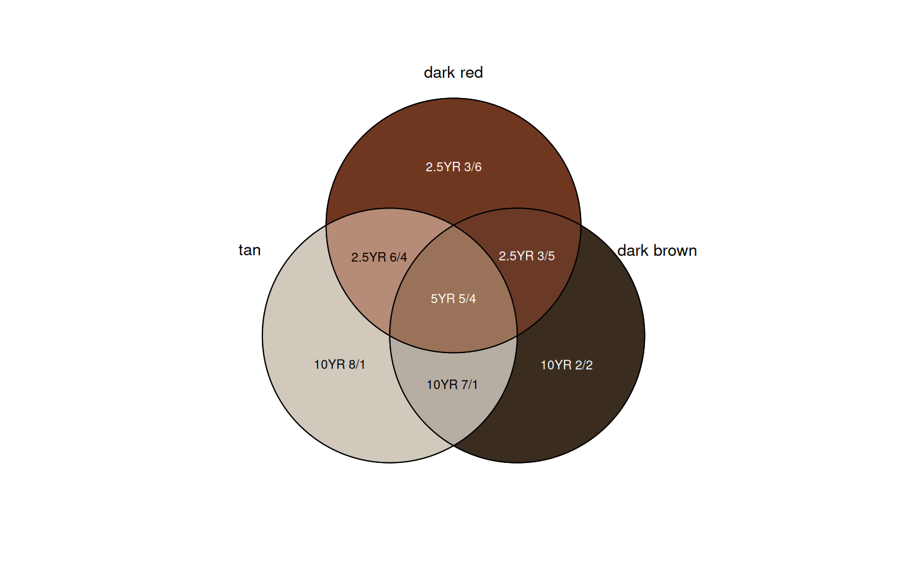

Create a Venn Diagram of Simulated Color Mixtures
character vector of standard Munsell color notation (e.g. "10YR 3/4")
vector of proportions, can sum to any number, must be same length as chips
approach used to simulate a mixture: see aqp::mixMunsell() for details
logical, use alternative ellipse-style (4 or 5 colors only)
logical, print mixture labels
logical, print names outside of the "sets"
scaling factor for set names
nothing returned, function is called to create graphical output
if(requireNamespace("venn") & requireNamespace("gower")) {
chips <- c('10YR 8/1', '2.5YR 3/6', '10YR 2/2')
names(chips) <- c("tan", "dark red", "dark brown")
colorMixtureVenn(chips)
colorMixtureVenn(chips, names = TRUE)
colorMixtureVenn(chips, w = c(1, 1, 1), names = TRUE)
colorMixtureVenn(chips, w = c(10, 5, 1), names = TRUE)
}
#> Loading required namespace: venn


